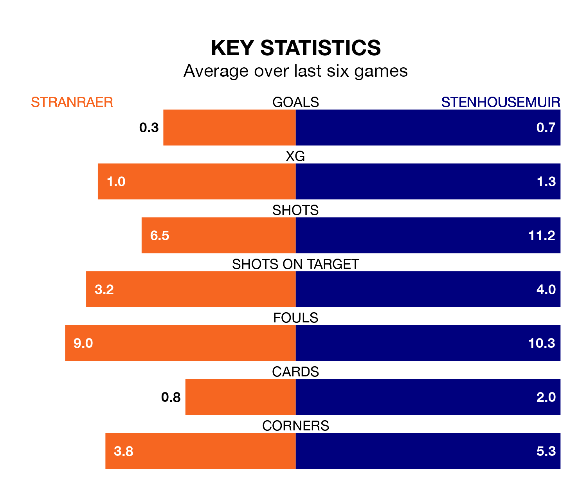

Relegation candidates Stranraer face a challenge against high-flying Stenhousemuir at Stair Park on Saturday.
Stranraer are rooted to the bottom of the League Two table, and have picked up eight wins and nine draws in their 35 games to date.
The Warriors, meanwhile, are top of the standings with 68 points, having won 18 and drawn 14.
In Darren Jamieson, Stenhousemuir can rely on one of the league's safest pair of hands. He has kept 19 clean sheets in his 34 appearances this season, and no 'keeper has prevented the opposition scoring more often in League Two.
In Stranraer's net, Lewis Budinauckas has seven clean sheets in 28 games. He has conceded a goal every 66 minutes, 80% more often than the 122 minutes between goals for Darren Jamieson.
With 36 goals in 35 games so far this season, the hosts are the league's second-lowest scorers with 1.0 goals per game. And they are conceding more than average, letting in 53 goals at a rate of 1.5 per game.
The Warriors, meanwhile, are above average scorers, with 1.4 goals per game, compared to a league average of 1.3. They have conceded 0.8 goals per game.
Stranraer are in bad form in League Two, with no wins and three draws from their last six games.
With no wins and six draws over that period, the away team's form is better – they have taken six points from 18, compared to Stranraer's three.
In the last 10 years, Stranraer and Stenhousemuir have played each other on 29 occasions. Stranraer won 15 of them, Stenhousemuir 10, and they drew four times.
On average, Stranraer scored 1.9 goals and the Warriors 1.2 in those matches.
Their last meeting was on January 20, when Stenhousemuir won 1-0 at home.
Stranraer's last match was on April 27, a 2-0 loss against Forfar Athletic.
Stenhousemuir drew 1-1 with Bonnyrigg Rose Athletic last time out, also on April 27, with Gregor Buchanan on the scoresheet.
Updated: 10:44 (UTC), 30/04/24